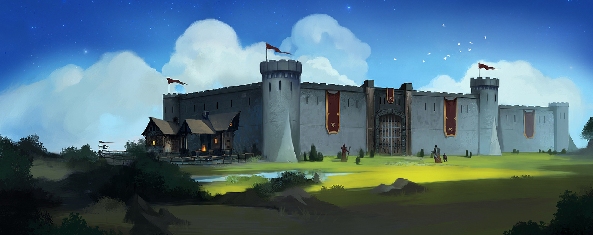
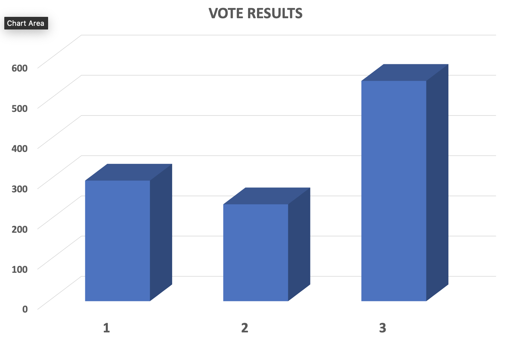

Weekly Update
Change Log
Which feature should we add?
Vote Result
Feature 1: Character Hibernation
SWTOR now has three raids: Eternity Vault, Karagga's Palace, and Explosive Conflict. I first discovered Lordaeron as a fledgling warrior, prone to wearing mail and even leather because I knew almost nothing about my class, while questing. I’ve previously talked about the true dynamic nature of WH space in EVE, and I want to use last weekends Op as a backdrop to sum that thought up and perhaps add some clarity to it as well. Then there’s the hitching, stuttering, and framerate issues he experiences that make him so frustrated that our time spent playing slowly becomes more of a burden than pleasure.
- Thing one 👍
- Thing two
- Thing three
- Thing four ✌️
Feature 2: Character Hibernation
SWTOR now has three raids: Eternity Vault, Karagga's Palace, and Explosive Conflict. I first discovered Lordaeron as a fledgling warrior, prone to wearing mail and even leather because I knew almost nothing about my class, while questing. I’ve previously talked about the true dynamic nature of WH space in EVE, and I want to use last weekends Op as a backdrop to sum that thought up and perhaps add some clarity to it as well. Then there’s the hitching, stuttering, and framerate issues he experiences that make him so frustrated that our time spent playing slowly becomes more of a burden than pleasure.
Feature 3: Character Hibernation
SWTOR now has three raids: Eternity Vault, Karagga's Palace, and Explosive Conflict. I first discovered Lordaeron as a fledgling warrior, prone to wearing mail and even leather because I knew almost nothing about my class, while questing. I’ve previously talked about the true dynamic nature of WH space in EVE, and I want to use last weekends Op as a backdrop to sum that thought up and perhaps add some clarity to it as well. Then there’s the hitching, stuttering, and framerate issues he experiences that make him so frustrated that our time spent playing slowly becomes more of a burden than pleasure.
- ❮
- ❯
- August
2021
- Mo
- Tu
- We
- Th
- Fr
- Sa
- Su
- 1
- 2
- 3
- 4
- 5
- 6
- 7
- 8
- 9
- 10
- 11
- 12
- 13
- 14
- 15
- 16
- 17
- 18
- 19
- 20
- 21
- 22
- 23
- 24
- 25
- 26
- 27
- 28
- 29
- 30
- 31